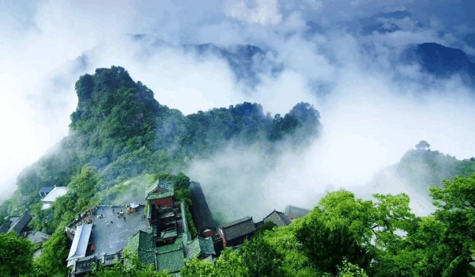

| 家乡名胜——武当山 | |
|---|---|
| 武当山，中国道教圣地，又名太和山、谢罗山、参上山、仙室山，古有“太岳”、“玄岳”、“大岳”之称。位于湖北省西北部十堰市丹江口市。东接襄阳市，西靠十堰市 ，南望神农架，北临南水北调中线源头丹江口水库。 | |
|  | 武当山的云海景观极为壮观，常常被形容为仙境。在日出时分，云海与日出相互映衬，形成一幅美丽的画卷。天边渐明，曙光初现，云海尽头红点跃出，瞬间化为火球腾空，霞光万道，峰峦巧石渐入眼底，武当山沉浸于彩光之中，美不胜收。 云海在山的变化万千，时而轻柔如棉，时而汹涌澎湃。阳光穿透云海，将云雾染成橙黄、绯红，如梦如幻。山峰在云海中若隐若现，有的山峰似莲花绽放，有的如利剑高悬，阳光勾勒出山峰的轮廓，使其在云海中夺目。古武当山的云海也有其独特的美。盛夏时节，武当山景区迎来云海高发季。群山上空缥缈的流云使得古武当山多了一分仙气。云海松软缠绵，轻盈飘逸，峰峦隐现如画，烟雾迷离，构成了一幅浓墨淡染的山水画卷。 武当山古建筑群采用了“天人合一”的设计理念，建筑分布在山脉的不同层次上，形成了“上天、下地”的空间布局。主要建筑如太和宫、金殿等，均沿山势而建，融入自然环境中，展现出一种和谐的美感。这些建筑不仅体现了道教对自然和宇宙的独特理解，也融合了中国古代建筑艺术的精华。 |
| 武当道教是中国道教的一个重要流派，它的教理、教义与中国道教的教理、教义同出一辙。武当道教是“以武当山为本山，以信仰真武——玄武，重视内丹修炼，擅长雷法及符箓禳。 | |
| 历史渊源 | 道教文化 | 奇景美色 | 当代价值 | 旅游攻略 |